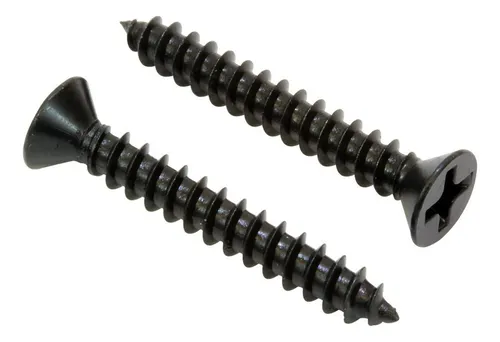

Tornillos y Fijaciones
Características
- Tipo de tornillo: Autoperforante
- Forma de cabeza: trompeta
- Sistema de apriete: philips
- Forma de la rosca: helicoidal
- Modelo: T2 aguja
- 1000 unidades por pack
Descripción
Este tornillo autoperforante de alta calidad es ideal para trabajos de construcción en seco. Su diseño de punta aguja facilita la perforación, mientras que su tamaño de 6 x 1 es perfecto para una amplia gama de aplicaciones. Cada caja contiene 1000 unidades, lo que te proporcionará suficiente cantidad para grandes proyectos. Su acabado resistente asegura una larga durabilidad y un rendimiento fiable. Ideal para profesionales y aficionados al bricolaje por igual.
Aplicaciones
- Fijacion de placas de Durlock